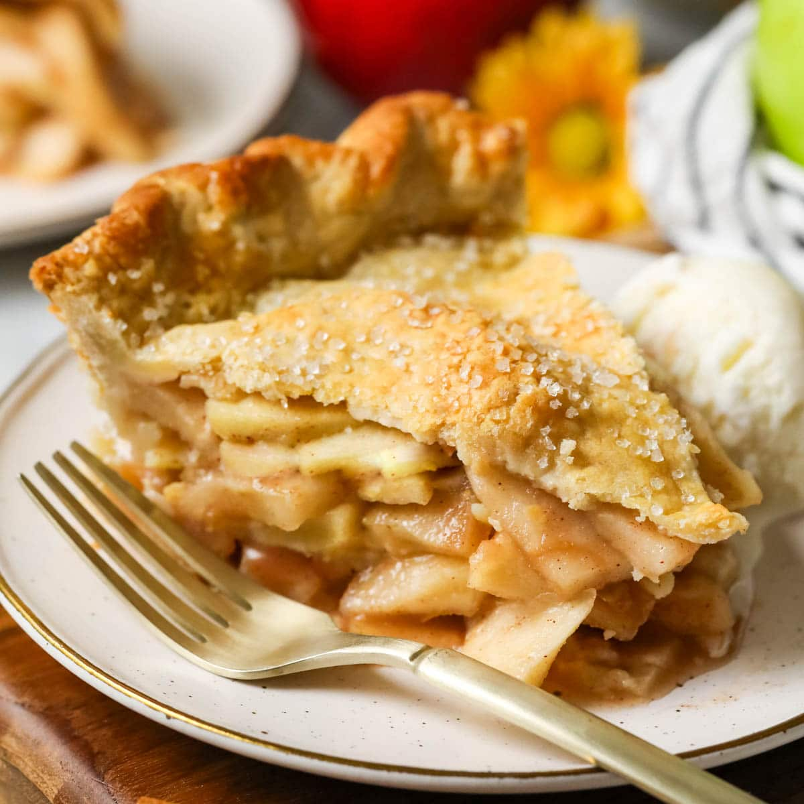

Home
Apple Pie Recipe

Description
Apple pie is a classic dessert made with a buttery, flaky crust and a sweet apple filling spiced with cinnamon and nutmeg. It’s a warm, comforting treat that’s perfect for holidays or any time you crave something homemade and delicious.
Ingredients
- Pie crust (store-bought or homemade)
- Apples (peeled, cored, and sliced)
- Sugar
- Brown sugar
- Cinnamon
- Nutmeg
- Lemon juice
- Butter
- Flour (for thickening)
- Egg (for egg wash, optional)
Steps
- Prepare the Filling: In a bowl, toss apple slices with sugars, cinnamon, nutmeg, lemon juice, and flour.
- Prepare the Crust: Roll out one crust and place it in a pie dish. Fill with apple mixture.
- Add the Top Crust: Place second crust on top, seal the edges, and cut small slits for steam. Optional: brush with egg wash.
- Bake: Bake at 375°F (190°C) for 45–55 minutes until crust is golden and filling is bubbly.
- Cool: Let the pie cool for at least 2 hours to set before slicing.
- Serve: Serve as is or with a scoop of vanilla ice cream.